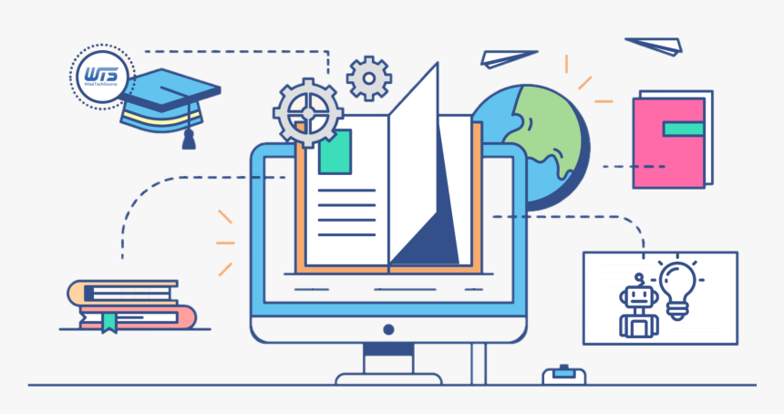

How Technology helps Education

Students learn in different ways. In a traditional lesson, a teacher presents material, and students all engage with it in the same way. The entire class is expected to move through the content at the same pace. As you can imagine, there’s very little room for freedom when teaching thirty students the same things in the same ways during the same time frames. But that doesn’t have to be the case.
Digital assistant benefits in Education
Artificial intelligence has gone mainstream. It’s already integrated into our everyday lives, with realistic voices responding to questions and requests. For a while now, we have been able to get reminders for appointments, encouragement for fitness routines, and remote control over household lights and appliances.
One of the important realizations is learning about what AI can’t do. Young students will naturally ask a variety of questions. They will quickly figure out that certain questions will prompt accurate answers, while others will stump the smart speaker or illicit an incorrect response. Children usually “test” the device, making silly requests and observing the limitations.
AR, VR in Education
AR/VR as an educational tool is hardly a novel concept. But immersive learning has only recently transitioned from small-scale experimentation to a multimillion-dollar market with rapidly growing use.2 Classrooms across the country use AR/VR for virtual field trips, science experiments, immersive simulations, and more. Many basic experiences are compatible with mobile devices, and advanced headsets simultaneously improve in quality and decrease in cost.
The purse of AI in Education sector

Artificial intelligence is one of the most common topics of discussion right from healthcare to e-commerce. It has been seen that the education sector is slow in using AI. The advantages of AI in education sector can enhance the learning at the best private university in Jaipur.
AI improves the process of education for students via enhancing interaction with teachers, offering access to the correct course, and free up some time to concentrate on other aspects of life.